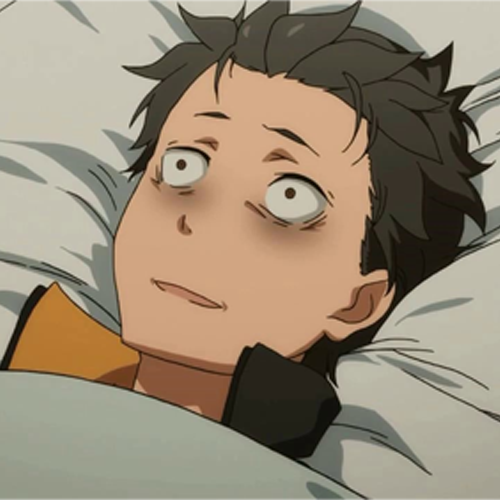

SATELLA
SATELLA also known as the Witch of Envy, Wearing a black dress, with a white face look similair to EMILIA Which make fan confuse and more like a Mastery to us which will reveal In Future season, she's also known as the one who brought SUBARU to another World, eventhought she was sealed by unkown more like a hero or a sage.
ROSWAALS L MATHERS
ROSWAAL L MATHERS, He's also was known by all lutina kingdom wizard the most strongest wizard in Re:Zero which make him the most wealty but despite that he commit a lot of crime which command by the book was given to him from his Echidna, known as the witch of Greed.
ELSA GRANHIERT
trying to kill people without a reason but a fun pleasure to her that's ELSA GRANHIERT she's also known as a Bowel hunter, She's an Assaassin being hired by ROSWAAL L MATHERS to kill and steal EMILIA and SUBARU.
STORY
It's all about character story in the anime, most Character in this anime always end up pathetic which is hard for fan to watch the whole anime through
character suffer from situation to situation.
It's all about character story in the anime, most Character in this anime always end up pathetic which is hard for fan to watch the whole anime through character suffer from situation to situation.
FELT

It's all about character story in the anime, most Character in this anime always end up pathetic which is hard for fan to watch the whole anime through character suffer from situation to situation.
SUBARU